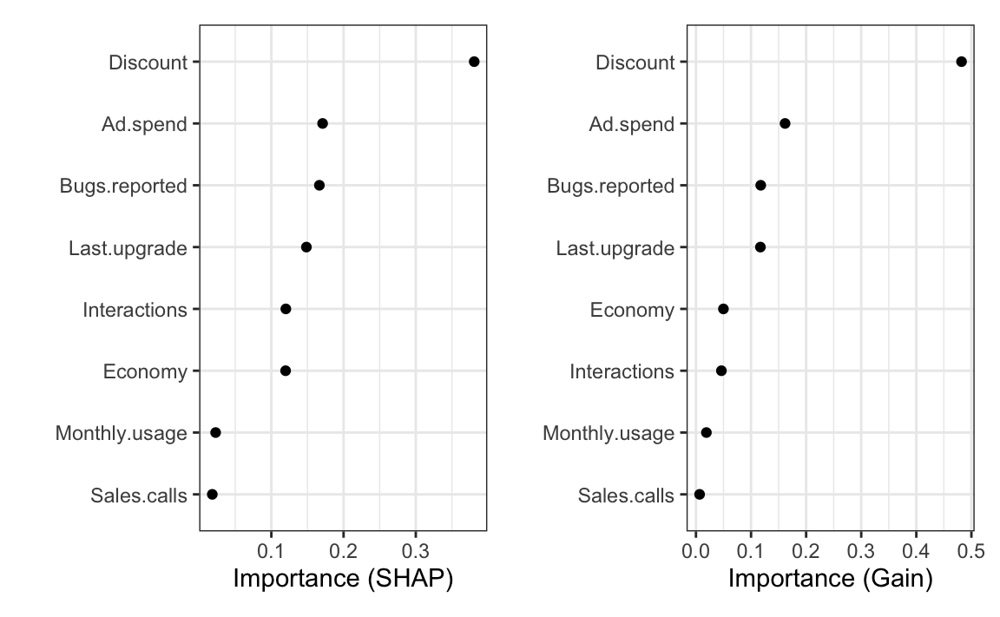
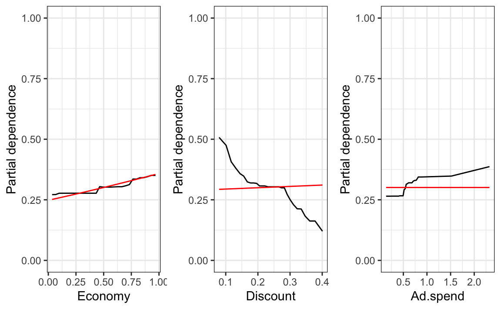
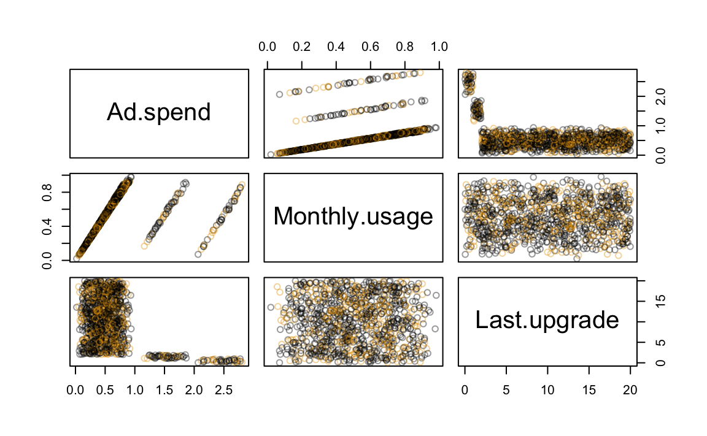
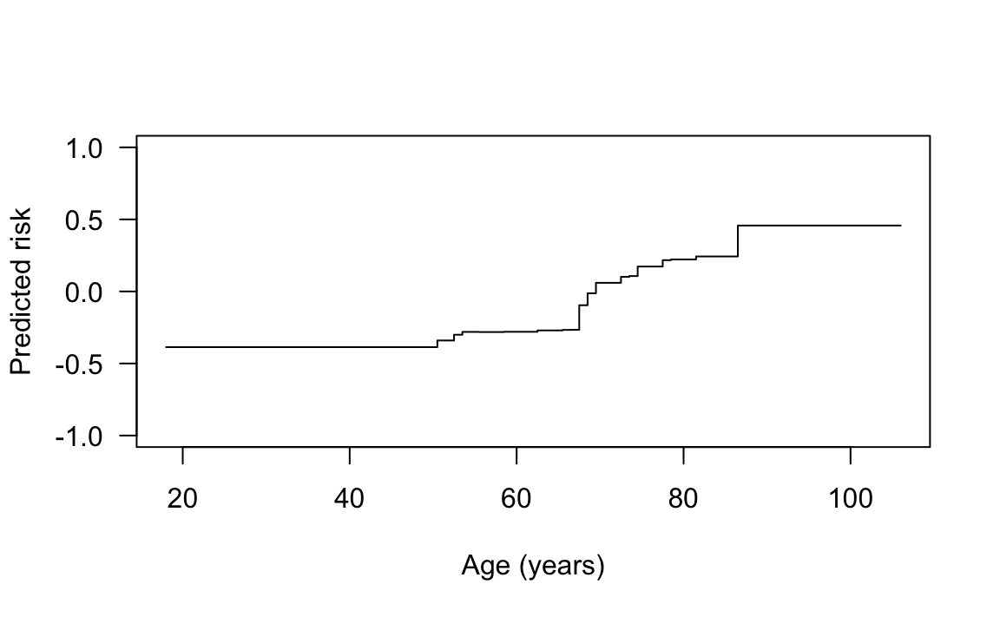
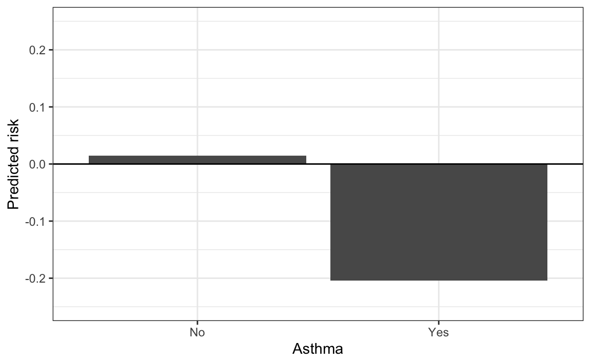

DAG Nammit
The Challenges and Dagners of Causally Interpreting Machine Learning Models
Brandon M. Greenwell
Slides: https://github.com/bgreenwell/dagnammit
About me
B.S. and M.S. in Applied Statistics (WSU)
Ph.D. in Applied Matehmatics (AFIT)
Director, Data Science at 84.51˚
Current UC LCB adjunct 👨🏫 (~7 years)
Some R packages 📦 :
pdp (partial dependence plots)vip (variable importance plots)fastshap (faster SHAP values)
Some books 📚 :
Why does explainability matter?
Model debugging - Why did my model Netflix Feature Engineering - How can I improve my model?Detecting fairness issues - Does my model discriminate?Human-AI cooperation - How can I understand and trust the model’s decisions?Regulatory compliance - Does my model satisfy legal requirements?High-risk applications - Healthcare, finance, judicial, …Common sense
Levels and methods of explainability
Levels of explainability
Global
Local
Explaining individual predictions (fastshap )
Methods of explainability
Model-specific
Model coefficients
Inspect tree structure 🌲
Model-agnostic
Can be applied to any prediction model ⚠️
Black-box vs. glass -box models
Black -box models ⬛ :
Often require (expensive) post-hoc techniques that require additional assumptions to explain
👀 Looking at you permutation methods! 😏
Often misleading without proper constraints (e.g., interactions and monotonicity)
IMO, multicollinearity
glass 🧊 :
Natutrally interpretable structure
Business rules and rule-based models (e.g., CORELS)
Small decision trees
Additive linear and nonlinear models (e.g., GLMs, GAMs, and GA2Ms)
Explainable boosting machines !
Interpretability vs. explainability
Explainable machine learning
Interpretable machine learning
Useful resources
The problem with observational data…
VIDEO
Causation is a controversial topic
“Causation is for other people… it is very dicey… You know, we have real problems to solve. I can’t dick around, frankly, thinking about other things like causation right now.”
--Chief Analytics Officer (NYC Mayor's office, 2013?)
Correlation does not imply causation
Causal fallacies :
Post hoc ergo propter hoc (i.e., “rooster syndrome”)
Does the rooster’s crowing cause the sun to rise?
Coincidental vaccine adverse events
Cum hoc ergo propter hoc
Some causal fallacies in the wild
Customer retention example
Initial goal is to train a model to predict whether a customer will renew their software subscription (taken from Lundberg et al. (2021) )
Eight features were identified for predicting retention (Did.renew=0/1):
Customer discount offered upon renewal (Discount)
Ad spending on this type of customer since last renewal (Ad.spend)
Customer’s monthly usage (Monthly.usage)
Time since last upgrade upon renewal (Last.upgrade)
No. bugs reported by customer since last renewal (Bugs.reported)
No. interactions with customer since last renewal (Interactions)
No. sales calls with customer since last renewal (Sales.calls)
Health of regional economy upon renewal (Economy)
10k total records: 8k for training and 2k for validation
Interpreting a linear model
Output from an additive logistic regression fit:
Estimate Std. Error z value Pr(>|z|)
(Intercept) -0.665 0.134 -4.961 0.000
Sales.calls 0.074 0.060 1.238 0.216
Interactions 0.091 0.056 1.612 0.107
Economy 0.597 0.091 6.589 0.000
Last.upgrade -0.022 0.005 -4.190 0.000
Discount -5.950 0.311 -19.106 0.000
Monthly.usage 0.351 0.146 2.406 0.016
Ad.spend 0.602 0.062 9.766 0.000
Bugs.reported 0.259 0.035 7.345 0.000
Interpreting an ML model
No “simple” prediction formula for most black-box models!
Usually rely on post-hoc techniques to explain
Most of these require good visualizations
Readily available in different software (open-source and propprietary)
Often misapplied and/or misinterpreted!
Retention example (cont.)
Variable importance scores from an XGBoost fit:

Interpreting the PD plots
Ad.spend and Discount are important to this (fictional) business because they can be directly manipulated 🎛️
🙌 🎉 🥳 Hurrah! We can improve retention by
⬆️ Increasing ad spend⬇️ Decreasing discount amount
The true data generator
\[
\begin{aligned}
\mathsf{logit}\left(p\right) = 1.26 &\times \mathtt{Product.need} + \\
0.56 &\times\mathtt{Monthly.usage} + \\
0.7 &\times \mathtt{Economy} + \\
0.35 &\times \mathtt{Discount} + \\
0.35 &\times \left(1 - \mathtt{Bugs.faced} / 20\right) + \\
0.035 &\times \mathtt{Sales.calls} + \\
0.105 &\times \mathtt{Interactions} + \\
0.7 &\times \left(\mathtt{Last.upgrade} / 4 + 0.25\right)^{-1} + \\
0 &\times \mathtt{Ad.spend} + \\
&-3.15 + \epsilon\
\end{aligned}
\]
Partial dependence vs. truth! 😱
PD plot (black ) vs. true causal relationship (red

So now what?
Watch the first talk by Peter Tennant!
VIDEO
Useful for representing causal relationships and assumptions
Directed Asyclic
Help determine whether the effect(s) of interest can be estimated from available data
Based on strong assumptions that are often unverifiable
DAGs in machine learning
Assume we have five features (X1–X5) and a response (Y). Causally interpreting an ML model assumes a very particular DAG!
How your algorithm sees it
flowchart TB
X1 --> Y
X2 --> Y
X3 --> Y
X4 --> Y
X5 --> Y
How the universe works
flowchart TB
X1 --> X3
X1 --> Y
X2 --> X3
X2 --> Y
X3 --> X4
X3 --> Y
X4 --> Y
X5 --> Y
Estimation and confounding
In causal inference, a common goal is to estimate the average (caual) effect of some “treatment” on an outcome of interest (e.g., effect of an ad campaign on sales)
Estimation typically requires adjusting (and not adjusting) for certain variables
A confounder is a variable that effects both the treatment and outcome
Confounders must be identified, measured, and appropriately adjusted for in the analysis
Need to be careful with other covariate roles , like colliders mediators , etc.
Adjustment sets are key
flowchart LR
X1 --> X3
X1 --> Y
X2 --> X3
X2 --> Y
X3 --> X4
X3 --> Y
X4 --> Y
X5 --> Y
DAGitty (copy and paste)dag {
bb="0,0,1,1"
X1 [pos="0.462,0.332"]
X2 [pos="0.425,0.238"]
X3 [exposure,pos="0.532,0.277"]
X4 [pos="0.529,0.396"]
X5 [pos="0.363,0.416"]
Y [outcome,pos="0.439,0.464"]
X1 -> X3
X1 -> Y
X2 -> X3
X2 -> Y
X3 -> X4
X3 -> Y
X4 -> Y
X5 -> Y
}
Useful resources
Retention example (cont.)
Assume strong domain expertise has allowed us to generate the following DAG :
Retention example (cont.)
Can we interpret any of the PD plots causally?
Mathematical background
The partial dependence (PD) of \(Y\) on \(X_S\) is defined as
\[
\begin{aligned}
g_s\left(x_s\right) &= E_{X_c}\left[g\left(x_s, X_c\right)\right] \\
&= \int g\left(x_S, x_C\right) dP\left(x_C\right) \\
&\approx \frac{1}{N}\sum_{i=1}^N g\left(x_S, X_{iC}\right)
\end{aligned}
\]
Retention example (cont.)
Using another XGBoost model, here’s the estimated PD of Did.renew on Ad.spend, conditional on Monthly.usage and Last.upgrade: … 🥁
Ummm … maybe a case of estimand vs. estimate ? 🤔
Stop permuting features?! 😱
…PaP metrics can vastly over-emphasize correlated features in both variable importance measures and partial dependence plots.
Retention example (cont.)

Double/debiased machine learning
Given a causal model, double ML essentially
Predict the outcome (\(y\) ) from an appropriate adjustment set and get the residuals (\(r_y\) )
Predict the treatment (\(x\) ) from an appropriate adjustment set and get the residuals (\(r_x\) )
Regress \(r_y\) on \(r_x\) to create a model of the heterogeneous treatment effect
Double ML for Ad.spend
<- DoubleML:: DoubleMLData$ new (data = ret.trn, # training data y_col = "Did.renew" , # response d_cols = "Ad.spend" , # treatment x_cols = c ("Last.upgrade" , "Monthly.usage" ) # adjustment set <- mlr3:: lrn ("regr.ranger" , num.trees = 500 )set.seed (1810 ) # for reproducibility = DoubleML:: DoubleMLPLR$ new (ml_l = lrnr$ clone (), ml_m = lrnr$ clone ()$ fit ()
# Print results print (dml_plr)# ------------------ Fit summary ------------------ # Estimates and significance testing of the effect of target variables # Estimate. Std. Error t value Pr(>|t|) # Ad.spend -0.09634 0.25197 -0.382 0.702 # Compute 95% confidence interval print (dml_plr$ confint ())# 2.5 % 97.5 % # Ad.spend -0.5901917 0.397511
Challenges with DAG-based inference
Faithful DAGs seem hard to come by
What if you have 800 potential features?
Is the right domain expertise even available?
What about unmeasured confounders?
DAGs are based on strong (and often unverifiable) assumptions
Oftentimes multiple reasonable DAGs will exist
Designed experiments
RCT s are arguably still the gold standard, but …
😇 There can be ethical concerns💰 Can be expensive to implement
However…
Responsible, transparent use of machine learning can help narrow down the hypothesis space!
Ingot cracking example
I’m reminded of an old (but still fantastic) data mining lecture from Richard De Veaux (skip to the 44:30 mark)
20,000 lb. ingots made in a giant mold
Roughtly 25% of ingots develop cracks
Cracked ingots cost $30,000 to recast
Roughly 900 observations (ingots) on 149 variables
What’s causing them to crack?
Ingot cracking example (cont.)
Lots of iterations, but… “Looks like Chrome(!?)”
🕵️ A glass -box model gave clues for generating a hypothesis (i.e., which variable to focus on)Follow-up randomized experiments led to substantial improvement!
Adding constraints (where feasible)
Often useful to constrain the functional form of the model in some way
Business considerations
Domain knowledge
Enforcing sparsity (e.g., EBMs with Sparsity )
Enforcing monotonicty between features and the predicted output can be done in several ways during training (e.g., linear and tree-based models)
Pneumonia example
Data contains 46 features on 14199 pneumonia patients
Patient demographics (e.g., age)
📐 Various measuremnts (e.g., heart rate)🔬 Lab test results (e.g., WBC)🩻 Chest x-ray results (e.g., pleural effusion)
Too many to construct a useful DAG?
Goal is to predict probability of death (0/1)
Data from Caruana et al. (2015) and Wang et al. (2022)
Pneumonia example (cont.)
Living past 100 decreases risk?
Pneumonia example (cont.)
Adding monotonic constraints can be helpful!

Pneumonia example (cont.)
Having asthma lowers a patient’s risk of dying from pneumonia?

Pneumonia example (cont.)
According to the doctors, asthmatic patients (A) would likely receive better care earlier (T):
G
A
A
D
D
A->D
T
T
A->T
T->D
Pneumonia example (cont.)
If we use the model as is to make hospital admission decisions, asthmatic patients are likely to miss out on care they need
Interpretability and causal knowledge can help identify such dangerous patterns and improve the model:
Force monotonicity (e.g., A > !A)
Remove the asthma feature
Edit the effect out 😱
Causal discovery? 🤔
Key takeaways
ML is great at identifying and utilizing patterns and associations in data to make predictions
Causal knowledge can be used to improve models!
Some quotes I like from Becoming A Data Head :
“There are clever ways to use observational data to suggest some causal relationships. [They ALL] rely on strong assumptions and clever statistics.”
“Any claims of causality with observational data should be met with skeptimicism.”